|
Child 44
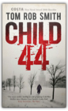
Eleven Minutes
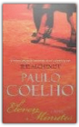
EN-P-03
Superchick

THE WHITE TIGER
Kane and Abel
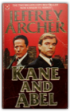
JEFFREY ARCHER
Twelve Red Herrings

Twist in the Tale
The Conference of the Birds
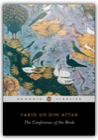
Farid ud-Din Attar
The acclaimed translation of a magnificent work of Persian poetry—now updated with new materialComposed in the twelfth century in northeastern Iran, Farid Attar’s great mystical poem is among the most significant of all works of Persian literature. A marvelous, allegorical rendering of the Islamic doctrine of Sufism, it describes the pilgrimage of the world’s birds in search of their ideal king, the Simorgh bird, and the arduous journey they take to reach him. This masterly translation preserves the poem’s rhymed couplet form and nuances of language. Tiger Eyes
Little Lost Hen Hb
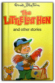
Enid Blyton
Ricochet
Thank You for Smoking
By the River Piedra I Sat Down & Wept
The Devil and Miss Pym
Know
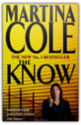
Martina Cole
Joanie Brewer' s children meant the world to her. She'd do anything to protect them, even resorting to prostitution and petty crime in order to feed and clothe them. So when her beautiful teenage daughter is raped and murdered, only one thing will stop Joanie's pain - seeing her daughter's killer brought to justice. Joanie knows who he is and she'll do whatever it takes to nail him...
My Feudal Lord: A Devastating Indictment of Women's Role in Muslim Society
Then We Came to the End

The Hippopotamus
Fired from his newspaper, months behind on his alimony payments and disgusted with a world that undervalues him, Ted seeks a few months repose and free drink at Swafford Hall, the country mansion of his old friend Lord Logan. But strange things have been going on at Swafford. Miracles, Healings, Phenomena beyond the comprehension of a mud-caked hippopotamus like Ted... The Cat Who Went to Paris

Time Fuse

Lingering Shadows
From Survival to Significance ... a Journey
The 80/20 Principle: The Secret to Achieving More with Less

The 80/20 principle is one of the great secrets of highly effective people and organizations. Did you know, for example, that 20 percent of customers account for 80 percent of revenues? That 20 percent of our time accounts for 80 percent of the work we accomplish? The 80/20 Principle shows how we can achieve much more with much less effort, time, and resources, simply by identifying and focusing our efforts on the 20 percent that really counts. Although the 80/20 principle has long influenced today's business world, author Richard Koch reveals how the principle works and shows how we can use it in a systematic and practical way to vastly increase our effectiveness, and improve our careers and our companies. The unspoken corollary to the 80/20 principle is that little of what we spend our time on actually counts. But by concentrating on those things that do, we can unlock the enormous potential of the magic 20 percent, and transform our effectiveness in our jobs, our careers, our businesses, and our lives. The Chronicles of Narnia
Blue Smoke and Murder
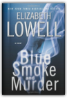
Elizabeth Lowell
Jill Breck was just doing her job as a river guide when she saved the life of the son of two of St. Kilda Consulting’s premier operators. But when a string of ominous events — including a mysterious fire that kills her great-aunt and a furor in the Western art world raised by a dozen Breck family paintings — culminates in a threat to her life, Jill finally calls in a favor.Zach Balfour works part-time as a consultant for St. Kilda. Though he’s got the skills to be a highly effective bodyguard, being a bullet catcher isn't his preferred way to spend time. But Jill is in deeper waters than she’s ever known, and she’ll need his protection; as she soon discovers, the perils of running wild rivers are tame compared with the hidden dangers in the high-stakes game of art collecting. Together, Zach and Jill must race against time to unmask a ruthless killer hidden in the blue smoke of money, threats, lies, and death. . . . Classic Book of Indian Vegetarian Curries

And When Did You Last See Your Father?
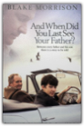
BLAKE MORRISON
Making Money
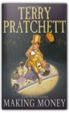
Terry Pratchett
The long awaited, brand new adult Discworld novel.It’s an offer you can’t refuse. Who would not to wish to be the man in charge of Ankh-Morpork’s Royal Mint and the bank next door? It’s a job for life. But, as former con-man Moist von Lipwig is learning, the life is not necessarily for long. The Chief Cashier is almost certainly a vampire. There’s something nameless in the cellar (and the cellar itself is pretty nameless), it turns out that the Royal Mintruns at a loss. A 300 year old wizard is after his girlfriend, he’s about to be exposed as a fraud, but the Assassins Guild might get him first. In fact lot of people want him dead Oh. And every day he has to take the Chairman for walkies. Everywhere he looks he’s making enemies. What he should be doing is . . . Making Money! From the Hardcover edition. The Fourth K
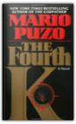
Mario Puzo
A PRESIDENTIAL DYNASTY. AN ARAB TERRORIST ATTACK. DEMOCRACY UNDER SIEGE. Mario Puzo envisioned it all in his eerily prescient 1991 novel, The Fourth K.President Francis Xavier Kennedy is elected to office, in large part, thanks to the legacy of his forebears–good looks, privilege, wealth–and is the very embodiment of youthful optimism. Too soon, however, he is beaten down by the political process and, disabused of his ideals, he becomes a leader totally unlike what he has been before. When his daughter becomes a pawn in a brutal terrorist plot, Kennedy, who has obsessively kept alive the memory of his uncles’ assassinations, activates all his power to retaliate in a series of violent measures. As the explosive events unfold, the world and those closest to him look on with both awe and horror. The Fountainhead
Twelve Dancing Princesses
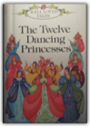
Ronne Randall
The God of Small Things
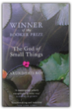
Arundhati Roy
EN-A-01
The Booster: A Novel
There was once a time when Jillian didn't need to shop (much less steal) to feel whole. But that was long ago — when her beloved uncle Bingo still owned Loevner's, the elegant Upper East Side department store. When, as a little girl, she spent hours listening to the wisdom of the perfume counter ladies and modeling party dresses for her uncle's impish partner, Alain; when she danced beneath Loevner's magnificent chandelier, found solace in the secret passageways behind its grand facade, and when her mother's prolonged absences were easily forgotten with a new camel-hair coat or a fresh pair of Mary Janes. And then one day it was all gone. The department store family, the enchanted world, the endless abundance — pulled out from under her by her jet-setting mother, Lois; by the father she never knew; by the death of Alain, a cherished friend and confidant; and by the man with two first names who orchestrated the corporate takeover of her family's venerable sanctuary. Now, years later, Jillian cannot seem to make things right no matter how many Chloé blouses come home in her pocketbook. Her "perfect" life is loosely held together with half milligrams of Ativan and stolen cashmere scarves. It's only a matter of time until everything crumbles. Penned by one of advertising's most influential and provocative writers, this highly anticipated debut is packed with vibrant characters, bristling dialogue, and the rich detail of the author's real-life research into the clandestine world of shoplifting rings. The Booster is a uniquely stylish, deftly woven story about discovering one's true self in the most unexpected of places. To Love Again
Special Delivery
Of Mice and Men
|


My Library
Collection Total:
199 Items
199 Items
Last Updated:
Sep 29, 2012
Sep 29, 2012
 Made with Delicious Library
Made with Delicious Library